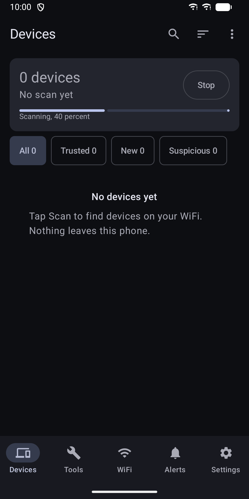
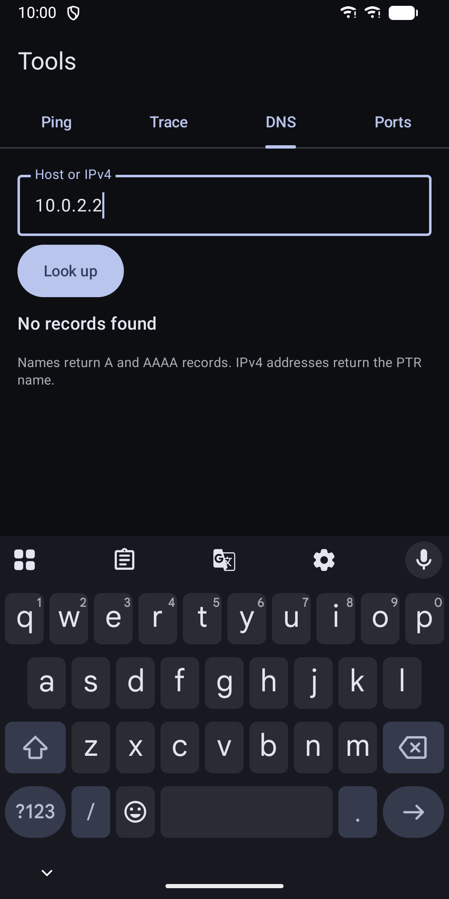
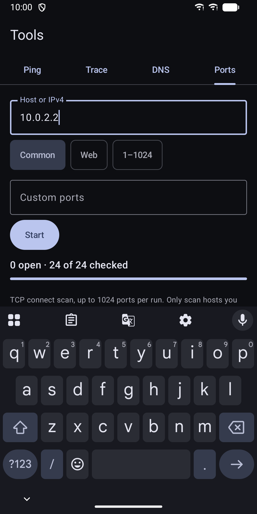
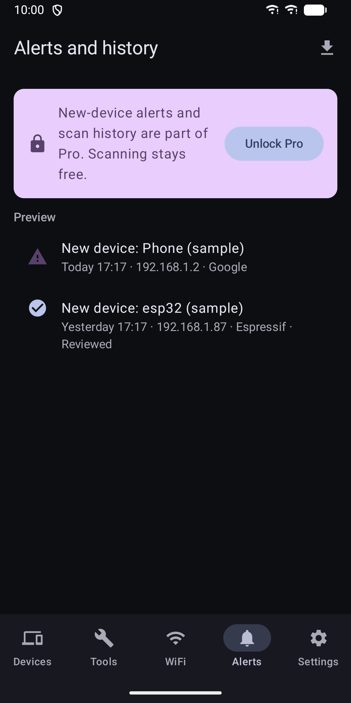
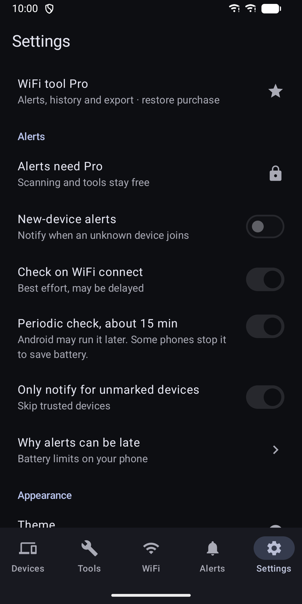

Escáner WiFi y herramientas
Descubre quién está en tu WiFi. Ping, traceroute, DNS y puertos.









Acerca de la app
¿Quién está en mi WiFi? ¿Por qué va lenta? Escáner WiFi y herramientas te ayuda a averiguarlo y guarda los resultados en tu teléfono. DISPOSITIVOS DE TU RED - Escanea tu red doméstica y mira todos los dispositivos que responden - Los nombres vienen de mDNS, UPnP/SSDP, NetBIOS y tu router, además de una base de datos de fabricantes integrada - Pon tus propios nombres a los dispositivos y márcalos como de confianza o sospechosos - Los dispositivos vistos por primera vez se señalan, para que los desconocidos destaquen - Busca, filtra y ordena la lista HERRAMIENTAS DE RED - Ping con gráfico de latencia. Si se bloquea ICMP, la app usa una comprobación TCP - Traceroute - Consulta DNS: registros A, AAAA y PTR inverso - Escaneo de puertos con ajustes predefinidos o tus propios puertos, hasta 1024 por ejecución - Las herramientas apuntan por defecto a tu red local. Las direcciones públicas piden confirmación antes INFORMACIÓN WIFI - Nombre de red, intensidad de señal, banda, canal, velocidad de enlace y estándar WiFi - Tu dirección IP, puerta de enlace, servidor DNS y subred WIDGET DE PANTALLA DE INICIO - Número de dispositivos y hora del último escaneo de un vistazo PRO (UNA COMPRA DENTRO DE LA APP) - Alertas de dispositivos nuevos al conectarte al WiFi y cada 15 minutos aproximadamente - Historial de dispositivos: mira cuándo estuvo conectado cada uno - Exporta informes en CSV o PDF, donde tú elijas El escaneo, los nombres, las marcas de confianza, la información WiFi y todas las herramientas funcionan sin comprar nada. Puedes restaurar Pro en cualquier dispositivo con la misma cuenta de Google. PRIVACIDAD - Sin cuenta, sin anuncios, sin analíticas, sin seguimiento - Las listas de dispositivos se quedan en tu teléfono y no entran en la copia de seguridad en la nube - No se sube nada. Solo se contacta con Google Play, para gestionar la compra de Pro - Las exportaciones solo se hacen cuando las pides, en el lugar que elijas - En Ajustes puedes borrar todos los datos LÍMITES - Escanea redes IPv4 /24, como 192.168.1.0/24. Sin IPv6. No está pensada para redes de trabajo - Android 10 y posteriores ocultan las direcciones MAC a las apps, así que los dispositivos se reconocen por el nombre cuando es posible. Los que usan MAC aleatoria pueden aparecer como nuevos al reconectarse - Las comprobaciones en segundo plano se hacen cada 15 minutos o más tarde. El ahorro de batería y algunos fabricantes pueden retrasarlas o detenerlas, y un dispositivo que entra y sale entre dos comprobaciones puede pasar desapercibido - El nombre del WiFi requiere el permiso de ubicación. Es una norma de Android. La app no usa ni guarda tu ubicación Funciona en modo claro y oscuro, en teléfonos y tabletas, con TalkBack. Escanea solo redes y equipos que tengas permiso para probar.